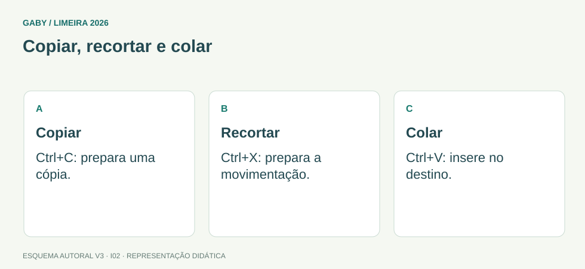

Objetivos do módulo
- Dominar atalhos fundamentais do Windows.
- Entender área de transferência e operações recortar/copiar/colar.
- Reconhecer elementos de interface e área de trabalho.
- Identificar o efeito exato dos atalhos da tecla Windows, de Alt, de Ctrl e das teclas de função no Windows 11.
- Gerenciar o histórico da área de transferência: ativar, fixar, excluir um item, limpar e sincronizar.
- Usar a Visão de tarefas, as áreas de trabalho virtuais e os atalhos de ajuste de janelas.
- Operar o Explorador de Arquivos, as caixas de diálogo e os recursos de acessibilidade (Lupa, Narrador, digitação por voz) pelo teclado.
- Diferenciar Desligar, Reiniciar, Suspender, Hibernar e Bloquear.
Copiar, recortar e colar

Descrição em texto do esquema
- Copiar: Ctrl+C: prepara uma cópia.
- Recortar: Ctrl+X: prepara a movimentação.
- Colar: Ctrl+V: insere no destino.
Oficina visual · aplique o esquema
Você quer manter um arquivo em Estudos e criar outra cópia em Revisão. Qual sequência de ações atende ao objetivo?
Atividade autoral complementar da V3. Registre sua resposta; a resolução está no arquivo de gabarito e revisão.
Mapa do conteúdo
- 1. Área de trabalho e interface
- 2. Área de transferência
- 3. Atalhos essenciais
- 4. Atalhos x arquivos
- 5. Menus e contexto
- 6. Atalhos da tecla Windows
- 7. Janelas: alternar, fechar, minimizar, maximizar e ajustar
- 8. Visão de tarefas e áreas de trabalho virtuais
- 9. Barra de tarefas pelo teclado e pelo mouse
- 10. Acessibilidade, voz e idioma do teclado
- 11. Explorador de Arquivos: atalhos, seleção e arrastar
- 12. Edição de texto e caixas de diálogo
- 13. Desligar, Reiniciar, Suspender, Hibernar e Bloquear
1. Área de trabalho e interface
Referência desta aula: Windows 11 em português do Brasil. Os atalhos e os nomes de comandos seguem a lista oficial “Atalhos de teclado no Windows”, da Microsoft (veja as Referências).
Área de Trabalho
A Área de Trabalho é a tela principal do Windows, que aparece atrás das janelas. Ela pode conter ícones, atalhos, pastas e arquivos. Guarde três pontos:
- ela aceita atalhos, pastas e arquivos, e não só atalhos de programas;
- cada usuário organiza e personaliza a própria Área de Trabalho (ícones, plano de fundo); isso não é exclusivo do administrador;
- o mesmo usuário pode ter várias áreas de trabalho, as áreas de trabalho virtuais.
Menu Iniciar
O menu Iniciar é o ponto central de acesso do Windows. Ele dá acesso aos aplicativos, às configurações e aos arquivos, tem uma caixa de pesquisa e permite fixar aplicativos, pastas e sites para abrir depressa. Nele também ficam a conta do usuário e o botão de energia, com as opções de bloquear, suspender, desligar e reiniciar.
Para abrir o menu Iniciar sem o mouse, pressione a tecla do logotipo do Windows (a mesma tecla fecha o menu) ou use Ctrl+Esc.
Barra de tarefas
A barra de tarefas é a faixa onde ficam o botão Iniciar, a Pesquisa, o botão Visão de tarefas, os ícones dos aplicativos e a área de notificação. Ela tem três funções que as provas costumam descrever juntas:
- fixar (ancorar) aplicativos de uso frequente: clique com o botão direito no ícone do aplicativo e escolha Fixar na barra de tarefas;
- mostrar os aplicativos em execução e permitir alternar entre as janelas abertas;
- reunir a área de notificação: relógio, calendário, rede, volume e avisos do sistema.
Windows+N abre a central de notificações com o calendário. Windows+A abre as Configurações rápidas (rede, volume, brilho).
2. Área de transferência
A área de transferência guarda temporariamente o que foi copiado ou recortado, para colar depois. Ela não é uma pasta nem um local de armazenamento permanente.
| Atalho | Efeito |
|---|---|
| Ctrl+C | Copia o item selecionado. O original permanece onde está. |
| Ctrl+X | Recorta o item selecionado, para movê-lo. Recortar não é excluir: o conteúdo vai para a área de transferência. |
| Ctrl+V | Cola o último item copiado ou recortado. |
| Ctrl+Shift+V | Cola como texto sem formatação. Não funciona em todos os aplicativos. |
| Windows+V | Abre o histórico da área de transferência, para escolher um item copiado antes. |
Histórico da área de transferência
Ctrl+V cola só o item mais recente. O histórico guarda vários itens copiados (textos e imagens) e deixa escolher qual colar. Ele abre com Windows+V.
- Vem desativado. Na primeira vez em que se pressiona Windows+V, o próprio painel oferece o botão para ativar o histórico. Também é possível ativá-lo em Configurações > Sistema > Área de Transferência, na chave Histórico da área de transferência. Reiniciar o computador não ativa o recurso.
- Limites. O histórico guarda até 25 itens, de até 4 MB cada, nos formatos texto, HTML e bitmap (imagem). Ao passar do limite, os itens mais antigos saem, a não ser que estejam fixados.
- Fixar. Um item fixado permanece no histórico mesmo depois de limpar tudo ou de reiniciar o computador.
- Reinicialização. O histórico é limpo sempre que o computador é reiniciado, exceto os itens fixados.
Excluir um item, limpar tudo e limpar pelas Configurações
| O que se quer | Como fazer | O que é removido |
|---|---|---|
| Remover um único item | Windows+V, selecionar Ver mais (...) ao lado do item e escolher Excluir. | Só aquele item. |
| Limpar o histórico pelo painel | Windows+V e selecionar Limpar tudo. | Todos os itens do dispositivo, exceto os fixados. |
| Limpar pelas Configurações | Iniciar > Configurações > Sistema > Área de Transferência; na área Limpar dados da área de transferência, selecionar Limpar. | Tudo, exceto os itens fixados, no dispositivo e na nuvem. |
O caminho cobrado em prova é Configurações > Sistema > Área de Transferência. A opção não fica em Privacidade nem em Área de Trabalho Remota, e não existe botão de limpeza na Área de Trabalho.
Sincronizar entre dispositivos
Na mesma tela das Configurações é possível sincronizar o histórico com outros dispositivos. A sincronização é vinculada à conta: é preciso entrar com a mesma conta Microsoft ou a mesma conta corporativa em todos os dispositivos. Estar na mesma rede ou parear por Bluetooth não substitui a conta. A sincronização é opcional: o histórico local funciona sem ela.
3. Atalhos essenciais
Estes são os atalhos gerais, que valem em quase todo o sistema. As seções seguintes detalham cada família: tecla Windows, janelas, áreas de trabalho virtuais, barra de tarefas, acessibilidade, Explorador de Arquivos e texto e caixas de diálogo.
| Atalho | Efeito no Windows 11 |
|---|---|
| Ctrl+C | Copiar o item selecionado. |
| Ctrl+X | Recortar o item selecionado. |
| Ctrl+V | Colar o último item da área de transferência. |
| Ctrl+Z | Desfazer a ação anterior. |
| Ctrl+Y | Refazer a ação desfeita com Ctrl+Z. |
| Ctrl+A | Selecionar todos os itens de uma janela ou todo o texto. |
| Alt+Tab | Alternar entre as janelas abertas. Mantendo Alt pressionada e tocando Tab várias vezes, percorre as janelas. |
| Alt+F4 | Fechar a janela ativa. |
| Ctrl+Esc | Abrir o menu Iniciar (mesmo efeito da tecla Windows). |
| Ctrl+Shift+Esc | Abrir o Gerenciador de Tarefas. |
| Ctrl+Alt+Del | Abrir a tela de segurança, com as opções de bloquear, trocar de usuário, sair, alterar a senha e abrir o Gerenciador de Tarefas. |
| Esc | Parar ou sair da tarefa atual, ou dispensar uma caixa de diálogo. |
| F5 | Atualizar a janela ativa. |
| Windows+E | Abrir o Explorador de Arquivos. |
| Windows+D | Mostrar e ocultar a área de trabalho. |
Gerenciador de Tarefas. É a ferramenta que lista os aplicativos e processos em execução. Serve, por exemplo, para examinar ou encerrar um aplicativo que parou de responder. Ctrl+Shift+Esc abre o Gerenciador diretamente; Ctrl+Alt+Del abre antes a tela de segurança, de onde ele pode ser escolhido. Encerrar um aplicativo por ali pode fazer perder o trabalho não salvo.
Esc. É a tecla de cancelar: fecha um menu aberto, dispensa uma caixa de diálogo, interrompe a tarefa em andamento quando o aplicativo permite. Esc não desfaz o que já foi concluído; para isso existe Ctrl+Z.
4. Atalhos x arquivos
Um atalho é uma referência para um alvo. Excluir o atalho normalmente não exclui o arquivo/programa original. O ícone costuma ter indicação visual própria.
5. Menus e contexto
Clique com botão direito abre menu contextual com ações dependentes do item selecionado. Menus, caixas de diálogo e barras de ferramentas variam entre aplicativos, mas conceitos como salvar, abrir, imprimir e propriedades são recorrentes.
O menu de contexto também abre pelo teclado: com o item selecionado, pressione Shift+F10. Para ver as propriedades do item selecionado no Explorador de Arquivos sem passar pelo menu, use Alt+Enter.
6. Atalhos da tecla Windows
A tecla do logotipo do Windows, sozinha, abre ou fecha o menu Iniciar. Combinada com outra tecla, abre um recurso do sistema. Em muitos casos a letra ajuda a lembrar, mas nem sempre: confira o efeito exato de cada uma.
| Atalho | Efeito no Windows 11 |
|---|---|
| Tecla Windows | Abrir ou fechar o menu Iniciar. |
| Windows+A | Abrir as Configurações rápidas. |
| Windows+D | Mostrar e ocultar a área de trabalho. |
| Windows+E | Abrir o Explorador de Arquivos. |
| Windows+H | Abrir a digitação por voz (ditado). |
| Windows+I | Abrir o aplicativo Configurações. |
| Windows+L | Bloquear o computador. |
| Windows+M | Minimizar todas as janelas. Windows+Shift+M restaura as janelas minimizadas. |
| Windows+N | Abrir a central de notificações e o calendário. |
| Windows+P | Abrir as opções de projeção, para escolher o modo de exibição em mais de uma tela. |
| Windows+R | Abrir a caixa de diálogo Executar. |
| Windows+S | Abrir a pesquisa do Windows (Windows+Q faz o mesmo). |
| Windows+T | Percorrer os aplicativos da barra de tarefas. |
| Windows+U | Abrir as Configurações na seção Acessibilidade. |
| Windows+V | Abrir o histórico da área de transferência. |
| Windows+X | Abrir o menu Link Rápido. |
| Windows+Tab | Abrir a Visão de tarefas. |
| Windows+Barra de espaços | Avançar pelos idiomas de entrada e layouts de teclado instalados. |
| Windows+Ponto (.) | Abrir o painel de emojis. |
| Windows+Shift+S | Selecionar uma região da tela e capturá-la para a área de transferência (Ferramenta de Captura). |
| Windows+PrtScn | Capturar a tela inteira e salvar a imagem em arquivo, na subpasta Capturas de Tela da pasta Imagens. |
Os atalhos da tecla Windows com as setas estão na seção 7; os das áreas de trabalho virtuais (Windows+Ctrl+…), na seção 8; os da Lupa e do Narrador, na seção 10.
O que cada recurso faz
- Configurações (Windows+I). É o aplicativo onde se ajusta o sistema: Sistema, Personalização, Contas, Acessibilidade, entre outras categorias. Windows+U abre o mesmo aplicativo, mas já na seção Acessibilidade.
- Executar (Windows+R). Caixa de diálogo com um campo para digitar o nome de um programa, pasta ou documento, que o Windows abre em seguida. Exemplo: Windows+R, digitar o caminho de uma pasta e pressionar Enter abre essa pasta.
- Pesquisa (Windows+S). Procura aplicativos, arquivos e configurações em todo o computador. Não confunda com F3, que pesquisa dentro do Explorador de Arquivos.
- Link Rápido (Windows+X). Menu com acessos a ferramentas do sistema, entre elas a opção Desligar ou sair. É o mesmo menu que aparece ao clicar com o botão direito no botão Iniciar. Não confunda com Ctrl+X, que recorta.
- Bloquear (Windows+L). Bloqueia o computador: para voltar, é preciso entrar de novo com a senha ou o PIN da conta. Os aplicativos continuam abertos. É o que se usa ao se afastar da mesa por instantes.
- Projeção (Windows+P). Usado com projetor ou segundo monitor. As opções são Somente tela do computador, Duplicar (a mesma imagem nas duas telas), Estender (as duas telas formam uma área única, e as janelas podem ser arrastadas de uma para a outra) e Somente segunda tela.
- Captura de tela (Windows+Shift+S). Escurece a tela e deixa selecionar a parte desejada. A imagem vai para a área de transferência e pode ser colada com Ctrl+V ou aberta na Ferramenta de Captura para marcar e salvar. Alt+PrtScn captura só a janela ativa para a área de transferência.
Windows+D e Windows+M não são iguais
| Atalho | Efeito | Para voltar |
|---|---|---|
| Windows+D | Mostra a área de trabalho, ocultando as janelas. | O mesmo atalho, Windows+D, traz as janelas de volta. |
| Windows+M | Minimiza todas as janelas. | Windows+Shift+M restaura as janelas minimizadas. |
| Windows+Home | Minimiza todas as janelas, exceto a ativa. | O mesmo atalho restaura as demais. |
| Windows+Seta para baixo | Minimiza só a janela ativa. | Alt+Tab ou clique no ícone da barra de tarefas. |
7. Janelas: alternar, fechar, minimizar, maximizar e ajustar
Alternar e fechar
| Atalho | Efeito |
|---|---|
| Alt+Tab | Alterna entre as janelas abertas. |
| Alt+Esc | Percorre as janelas na ordem em que foram abertas. |
| Windows+Tab | Abre a Visão de tarefas, com todas as janelas e as áreas de trabalho. |
| Alt+F4 | Fecha a janela ativa. Se nenhuma janela estiver aberta, oferece o desligamento do computador. |
| Ctrl+F4 | Em aplicativos que abrem vários documentos ao mesmo tempo, fecha o documento ativo, e não o aplicativo inteiro. |
| Alt+Barra de espaços | Abre o menu de contexto da janela ativa. |
Ao fechar com Alt+F4 um aplicativo com alterações não salvas, o aplicativo costuma perguntar se deseja salvar. Alt+F4 atua sobre a janela ativa: com o Explorador de Arquivos em primeiro plano, fecha o Explorador; com um documento em primeiro plano, fecha esse aplicativo.
Minimizar, maximizar e ajustar (tecla Windows com as setas)
Ajustar uma janela é encaixá-la em uma parte da tela, para trabalhar com duas ou mais lado a lado.
| Atalho | Efeito sobre a janela ativa |
|---|---|
| Windows+Seta para cima | Maximiza a janela. |
| Windows+Seta para baixo | Minimiza a janela. |
| Windows+Seta para a esquerda | Ajusta a janela ao lado esquerdo da tela. |
| Windows+Seta para a direita | Ajusta a janela ao lado direito da tela. |
| Windows+Alt+Seta para cima | Ajusta a janela à metade superior da tela. |
| Windows+Alt+Seta para baixo | Ajusta a janela à metade inferior da tela. |
| Windows+Shift+Seta para baixo | Restaura a janela que estava ajustada ou maximizada. |
| Windows+Z | Abre os layouts de ajuste, para escolher a posição da janela. |
| Windows+Shift+Seta para a esquerda ou para a direita | Move a janela para o monitor à esquerda ou à direita. |
8. Visão de tarefas e áreas de trabalho virtuais
A Visão de tarefas (Windows+Tab, ou o botão Visão de tarefas na barra de tarefas) mostra todas as janelas abertas e, embaixo, as áreas de trabalho existentes. É por ela que se organizam as janelas e as áreas de trabalho.
Uma área de trabalho virtual é um espaço separado, com seu próprio conjunto de janelas abertas. Serve para separar atividades: por exemplo, uma área para o atendimento e outra para um relatório. O que cai em prova:
- o recurso é nativo do Windows 11; não exige instalar nenhum programa;
- criar uma nova área não substitui a anterior nem apaga arquivos ou fecha programas: as janelas da outra área continuam abertas lá;
- cada área pode ser renomeada e ter a própria imagem de plano de fundo;
- a finalidade é organizar tarefas, e não só mudar a aparência.
| Atalho | Efeito |
|---|---|
| Windows+Tab | Abre a Visão de tarefas. |
| Windows+Ctrl+D | Cria outra área de trabalho virtual. |
| Windows+Ctrl+Seta para a direita | Muda para a área de trabalho virtual à direita. |
| Windows+Ctrl+Seta para a esquerda | Muda para a área de trabalho virtual à esquerda. |
| Windows+Ctrl+F4 | Fecha a área de trabalho virtual em uso. |
Criar e renomear pela Visão de tarefas
- Pressione Windows+Tab ou passe o cursor sobre o botão Visão de tarefas.
- Selecione Nova área de trabalho.
- Para renomear, selecione o nome da área de trabalho e digite o novo nome.
- Para mudar o plano de fundo de uma área, clique nela com o botão direito e escolha a opção de tela de fundo. Só imagens podem ser diferentes em cada área.
Compare os atalhos parecidos: Windows+Ctrl+D cria uma área; Windows+Ctrl+Seta alterna entre as que já existem, sem criar outra; Windows+Ctrl+F4 fecha a área em uso, enquanto Alt+F4 fecha só a janela ativa. E Windows+D, sem Ctrl, apenas mostra a área de trabalho.
9. Barra de tarefas pelo teclado e pelo mouse
| Atalho | Efeito |
|---|---|
| Windows+T | Percorre os aplicativos da barra de tarefas, um a cada toque. |
| Windows+Shift+T | Percorre os aplicativos da barra de tarefas no sentido contrário. |
| Windows+número (1 a 9, 0) | Abre o aplicativo fixado na posição indicada pelo número. Se ele já estiver aberto, muda para ele. |
| Windows+Shift+número | Inicia uma nova instância do aplicativo fixado naquela posição. |
| Windows+B | Leva o foco ao primeiro ícone da área de notificação. |
| Shift+clique em um ícone de aplicativo | Abre outra instância do aplicativo, isto é, mais uma janela independente dele. |
| Ctrl+Shift+clique em um ícone de aplicativo | Abre o aplicativo como administrador. |
| Shift+clique com o botão direito em um ícone | Exibe o menu da janela do aplicativo. |
Instância é cada execução de um aplicativo. Clicar no ícone de um aplicativo já aberto só traz a janela existente para a frente; Shift+clique pede uma segunda janela. Alguns aplicativos aceitam apenas uma instância e ignoram o pedido.
Shift+clique não fecha janelas, não fixa o aplicativo (fixar é pelo botão direito) e, sozinho, não abre como administrador: para isso é preciso Ctrl+Shift+clique.
10. Acessibilidade, voz e idioma do teclado
O Windows 11 traz recursos de acessibilidade integrados, sem instalar nada. Eles ficam em Configurações > Acessibilidade, que abre direto com Windows+U.
| Recurso | O que faz | Atalho |
|---|---|---|
| Configurações de Acessibilidade | Reúne os ajustes de visão, audição e interação. | Windows+U |
| Lupa | Amplia a tela inteira ou parte dela, para facilitar a leitura. | Windows+sinal de adição (+) ativa a Lupa e aumenta o zoom; Windows+sinal de subtração (-) reduz o zoom; Windows+Esc fecha a Lupa. |
| Narrador | Leitor de tela: lê em voz alta o texto, os botões e os demais itens da interface, para usar o computador sem enxergar a tela. | Windows+Ctrl+Enter inicia o Narrador; as mesmas teclas o encerram. Windows+Ctrl+N abre as configurações do Narrador. |
| Digitação por voz | Transforma em texto o que a pessoa fala (ditado). | Windows+H |
| Teclado virtual | Mostra um teclado na tela. | Windows+Ctrl+O |
| Teclas de Aderência | Permite acionar atalhos pressionando uma tecla de cada vez. | Shift cinco vezes |
- A digitação por voz exige conexão com a internet, microfone funcionando e o cursor em uma caixa de texto.
- Fechar a Lupa com Windows+Esc apenas encerra a ampliação; nada é apagado ou fechado nos documentos.
- Lupa amplia; Narrador lê. São recursos diferentes, e os dois começam com a tecla Windows.
Idioma de entrada e layout de teclado
Quando o computador tem mais de um idioma de entrada ou layout de teclado instalado (por exemplo, Português ABNT2 e Inglês Estados Unidos), Windows+Barra de espaços avança para o próximo. Windows+Shift+Barra de espaços percorre a lista no sentido contrário.
11. Explorador de Arquivos: atalhos, seleção e arrastar
O Explorador de Arquivos abre com Windows+E. Os atalhos abaixo valem com a janela do Explorador ativa.
Navegar e exibir
| Atalho | Efeito |
|---|---|
| Alt+D | Seleciona a barra de endereços, onde aparece o caminho da pasta. |
| Alt+Seta para cima | Sobe um nível no caminho: abre a pasta que contém a pasta atual (pasta pai). |
| Alt+Seta para a esquerda (ou Backspace) | Volta à pasta anterior do histórico de navegação. |
| Alt+Seta para a direita | Avança para a pasta seguinte do histórico de navegação. |
| Alt+P | Mostra ou oculta o painel de visualização. |
| Alt+Shift+P | Mostra ou oculta o painel de detalhes. |
| F3 | Pesquisa um arquivo ou pasta. |
| F5 | Atualiza a janela. |
| Ctrl+T | Abre uma nova guia. Ctrl+W fecha a guia ativa. |
Subir não é voltar. Alt+Seta para cima segue a hierarquia das pastas; Alt+Seta para a esquerda segue o caminho que você percorreu. Exemplo: você está em Downloads e abre, por um atalho, a pasta Documentos\Editais\2026. Alt+Seta para a esquerda devolve a Downloads (onde você estava antes). Alt+Seta para cima leva a Documentos\Editais (a pasta pai).
Painéis. O painel de visualização mostra o conteúdo do arquivo selecionado sem abri-lo. O painel de detalhes mostra informações sobre o arquivo. Os atalhos diferem só pelo Shift.
Agir sobre o item selecionado
| Atalho | Efeito |
|---|---|
| F2 | Renomeia o item selecionado. |
| Alt+Enter | Mostra as propriedades do item selecionado. |
| Shift+F10 | Exibe o menu de contexto do item selecionado (o mesmo do botão direito). |
| Ctrl+Shift+N | Cria uma nova pasta. |
| Delete (ou Ctrl+D) | Exclui o item selecionado e o move para a Lixeira. |
| Shift+Delete | Exclui o item selecionado permanentemente, sem movê-lo para a Lixeira. |
| Ctrl+A | Seleciona todos os itens da janela. |
- F2 muda só o nome. Trocar a extensão no nome não converte o arquivo para outro formato.
- F5 recarrega a lista de arquivos. Não desfaz uma exclusão; para desfazer, use Ctrl+Z.
- O que foi para a Lixeira pode ser restaurado. O que foi excluído com Shift+Delete não passa pela Lixeira.
- As teclas de função F2, F3 e F5 são vizinhas e caem juntas: F2 renomeia, F3 pesquisa, F5 atualiza.
Selecionar vários itens
| Como | O que seleciona |
|---|---|
| Ctrl+clique em cada item | Itens não adjacentes (separados), um a um. Clicar de novo com Ctrl em um item já marcado retira-o da seleção. |
| Clique no primeiro item e Shift+clique no último | O intervalo inteiro: os dois itens clicados e todos os que estão entre eles. |
| Ctrl+A | Todos os itens da janela. |
| Shift+teclas de direção | Vários itens seguidos, pelo teclado. |
| Ctrl+tecla de direção para ir até o item e Barra de espaços | Vários itens individuais, pelo teclado. |
Exemplo: em uma pasta com dez relatórios em lista, para pegar o 2º, o 5º e o 9º, clique no 2º e use Ctrl+clique no 5º e no 9º. Para pegar do 2º ao 9º, clique no 2º e use Shift+clique no 9º: oito arquivos ficam selecionados.
Arrastar com tecla modificadora
| Ao arrastar um arquivo mantendo… | Ao soltar, o Windows… |
|---|---|
| Ctrl | cria uma cópia no destino. O original permanece. |
| Shift | move o arquivo para o destino. |
| Alt | cria no destino um atalho para o arquivo original. O conteúdo não é copiado. |
12. Edição de texto e caixas de diálogo
Mover o cursor e selecionar texto
Nos campos e editores de texto que seguem o padrão do Windows, vale uma lógica simples: as setas movem o cursor; Ctrl aumenta o passo (de caractere para palavra, de linha para parágrafo); Shift transforma o movimento em seleção.
| Atalho | Efeito |
|---|---|
| Seta para a direita ou para a esquerda | Move o cursor um caractere. |
| Ctrl+Seta para a direita ou para a esquerda | Move o cursor para o início da próxima palavra ou da palavra anterior. |
| Ctrl+Seta para baixo ou para cima | Move o cursor para o início do próximo parágrafo ou do parágrafo anterior. |
| Shift+Seta para a direita ou para a esquerda | Seleciona caractere a caractere. |
| Shift+Seta para baixo ou para cima | Seleciona linha a linha. |
| Ctrl+Shift+Seta para a direita ou para a esquerda | Estende a seleção palavra a palavra. |
| Ctrl+Shift+Seta para baixo ou para cima | Estende a seleção parágrafo a parágrafo. |
| Shift+Home ou Shift+End | Seleciona do cursor até o início ou até o fim da linha. |
| Ctrl+Shift+Home ou Ctrl+Shift+End | Seleciona do cursor até o início ou até o fim do documento. |
| Ctrl+A | Seleciona todo o texto. |
Exemplo: com o cursor antes de “prazo” na frase “o prazo final vence hoje”, pressionar Ctrl+Shift+Seta para a direita duas vezes seleciona “prazo final”. Em resumo, Ctrl+Shift+tecla de direção estende a seleção por blocos de texto (palavras ou parágrafos), e não caractere a caractere.
Caixas de diálogo
Caixa de diálogo é a janela que pede uma resposta: Salvar como, Imprimir, Propriedades, mensagens de erro. O foco indica qual controle (botão, campo, caixa de seleção) recebe o que for digitado.
| Tecla | Efeito |
|---|---|
| Tab | Avança o foco para a próxima opção. |
| Shift+Tab | Retrocede o foco para a opção anterior. |
| Barra de espaços | Marca ou desmarca a caixa de seleção que está com o foco. |
| Teclas de direção | Escolhem um botão dentro de um grupo de botões de opção. |
| Ctrl+Tab e Ctrl+Shift+Tab | Avançam e voltam entre as guias da caixa de diálogo. |
| Alt+letra sublinhada | Executa o comando ou seleciona a opção daquela letra. |
| F4 | Mostra os itens da lista ativa. |
| Esc | Dispensa a caixa de diálogo, sem aplicar. |
Não confunda: Tab anda entre os controles de uma caixa de diálogo; Ctrl+Tab anda entre guias; Alt+Tab alterna entre janelas; Windows+Tab abre a Visão de tarefas.
13. Desligar, Reiniciar, Suspender, Hibernar e Bloquear
As opções de energia ficam no menu Iniciar, no botão de energia (Ligar/Desligar). Também aparecem em Windows+X, na opção Desligar ou sair.
| Opção | O que acontece | Quando usar |
|---|---|---|
| Suspender | O computador passa a gastar muito pouca energia e, ao ser reativado, volta rapidamente ao ponto em que estava, com os aplicativos abertos. | Pausa curta, como um intervalo para o café. |
| Hibernar | Gasta menos energia que a suspensão e também retorna ao ponto em que parou, mas demora mais para voltar. Foi criada para notebooks e pode não estar disponível em todos os computadores. | Ausência longa sem tomada para carregar a bateria. |
| Desligar | Desliga o computador completamente. | Fim do uso. |
| Reiniciar | Encerra o Windows e o inicia de novo. | Concluir atualizações ou resolver falhas. |
| Bloquear (Windows+L) | Mostra a tela de bloqueio; o computador continua ligado e a sessão permanece aberta. | Afastar-se sem deixar a tela acessível a outras pessoas. |
Reiniciar também limpa o histórico da área de transferência, exceto os itens fixados (seção 2).
Exemplos resolvidos passo a passo
Exemplo 1
Situação: Você copiou um parágrafo com Ctrl+C. O que ocorre ao usar Ctrl+V?
Exemplo 2
Situação: Excluir um atalho do Desktop remove o programa?
Exemplo 3
Situação: Com o histórico da área de transferência ativado, Marta copiou um número de protocolo, um endereço e um parágrafo. Ela fixou o número de protocolo. No dia seguinte, depois de reiniciar o computador, pressionou Windows+V. O que ela encontra? E se quisesse ter apagado só o endereço, sem perder o resto?
Exemplo 4
Situação: Um servidor atende o público e, ao mesmo tempo, prepara uma planilha de relatório. Ele quer deixar as janelas do atendimento em um ambiente e as do relatório em outro, e passar de um para o outro pelo teclado.
Exemplo 5
Situação: Na pasta Ofícios há doze arquivos em lista. É preciso copiar o 1º, o 4º e o 11º para a pasta Enviados, visível no painel de navegação, e depois excluir de vez o 12º, que é um rascunho.
Exemplo 6
Situação: Sem usar o mouse, a pessoa precisa: abrir as Configurações, voltar ao documento que estava editando, ampliar a tela para ler uma letra pequena e, ao sair da mesa, impedir que outros usem o computador.
Pegadinhas e erros frequentes
- Confundir Ctrl+X com exclusão definitiva.
- Achar que atalho contém o programa inteiro.
- Confundir Alt+Tab com Ctrl+Tab.
- Trocar Windows+D (mostra e oculta a área de trabalho) por Windows+M (minimiza todas as janelas) ou por Windows+Ctrl+D (cria área de trabalho virtual).
- Trocar Windows+L (bloquear) por desligar ou suspender: bloquear mantém tudo aberto.
- Achar que Reiniciar serve para uma pausa rápida: a pausa que retoma de onde parou é Suspender.
- Trocar Windows+I (Configurações) por Windows+U (Acessibilidade), ou Windows+R (Executar) por Windows+X (Link Rápido).
- Trocar Windows+S (pesquisa do Windows) por F3 (pesquisa no Explorador de Arquivos).
- Trocar Windows+V (histórico) por Ctrl+V (cola só o último item).
- Procurar a limpeza da área de transferência em Privacidade: o caminho é Configurações > Sistema > Área de Transferência.
- Achar que reiniciar apaga também os itens fixados do histórico, ou que a sincronização depende de rede local ou Bluetooth: depende da mesma conta.
- Trocar Alt+F4 (fecha a janela ativa) por Windows+Ctrl+F4 (fecha a área de trabalho virtual) ou por Ctrl+F4 (fecha o documento ativo).
- Trocar Alt+Seta para cima (pasta pai) por Alt+Seta para a esquerda (pasta anterior do histórico).
- Trocar Alt+P (painel de visualização) por Alt+Shift+P (painel de detalhes), ou Alt+D (barra de endereços) por Windows+D.
- Trocar F2 (renomear), F3 (pesquisar) e F5 (atualizar).
- Trocar Delete (Lixeira) por Shift+Delete (exclusão permanente).
- Usar Shift+clique para itens separados: Shift seleciona o intervalo; para itens não adjacentes é Ctrl+clique.
- Achar que arrastar com Alt copia o arquivo: Alt cria atalho; quem copia é Ctrl.
- Achar que Shift+clique na barra de tarefas abre como administrador: isso é Ctrl+Shift+clique.
- Trocar Lupa (Windows+sinal de adição; fecha com Windows+Esc) por Narrador (Windows+Ctrl+Enter).
Resumo de prova
- Clipboard armazena dados temporários para colagem.
- Ctrl+C/X/V = copiar/recortar/colar.
- Alt+Tab alterna janelas.
- Windows+E abre o Explorador de Arquivos.
- Atalho é referência.
- Tecla Windows ou Ctrl+Esc: menu Iniciar.
- Barra de tarefas: fixa aplicativos, mostra os abertos e reúne a área de notificação.
- Windows+D mostra/oculta a área de trabalho; Windows+M minimiza tudo; Windows+L bloqueia.
- Windows+I Configurações; Windows+U Acessibilidade; Windows+R Executar; Windows+S pesquisa; Windows+X Link Rápido.
- Windows+P projeção (Duplicar, Estender); Windows+T percorre a barra de tarefas; Windows+Barra de espaços troca idioma/layout.
- Windows+Shift+S captura parte da tela; Windows+H digitação por voz.
- Windows+V: histórico da área de transferência; precisa ser ativado; até 25 itens.
- Histórico: limpo ao reiniciar, exceto os fixados; Excluir remove um item; Limpar tudo remove os não fixados.
- Limpar: Configurações > Sistema > Área de Transferência. Sincronizar exige a mesma conta Microsoft ou corporativa.
- Windows+Tab: Visão de tarefas. Windows+Ctrl+D cria área virtual; Windows+Ctrl+Seta alterna; Windows+Ctrl+F4 fecha.
- Windows+Seta para cima maximiza; para baixo minimiza; esquerda/direita ajusta ao lado.
- Alt+F4 fecha a janela ativa; Ctrl+Shift+Esc abre o Gerenciador de Tarefas.
- Barra de tarefas: Shift+clique abre outra instância; Ctrl+Shift+clique abre como administrador.
- Lupa: Windows+sinal de adição (+) abre, Windows+Esc fecha. Narrador: Windows+Ctrl+Enter.
- Explorador: F2 renomeia; F3 pesquisa; F5 atualiza; Alt+Enter propriedades; Alt+D barra de endereços; Alt+P painel de visualização.
- Alt+Seta para cima: pasta pai. Alt+Seta para a esquerda: voltar.
- Shift+F10 menu de contexto; Ctrl+Shift+N nova pasta; Shift+Delete exclui sem Lixeira.
- Seleção: Ctrl+clique para itens não adjacentes; Shift+clique para intervalo; Ctrl+A tudo.
- Arrastar com Ctrl copia; com Shift move; com Alt cria atalho.
- Texto: Ctrl+Shift+Seta estende a seleção por palavra ou parágrafo.
- Caixa de diálogo: Tab avança o foco; Barra de espaços marca a caixa de seleção; Esc dispensa.
- Suspender = pausa que retoma de onde parou; Reiniciar = encerra e inicia de novo.
Exercícios do módulo
Resolva sem consultar o arquivo de gabarito. As questões são autorais e construídas para treinar os conceitos do edital.
- copia
- cola
- recorta
- fecha
- desfaz
- seleciona tudo
- abre Explorer
- recorta
- abre
- imprime
- cola
- salva
- abrir propriedades
- alternar janelas
- imprimir
- apagar arquivo
- Explorador de Arquivos
- Excel
- Editor do Registro
- exclui o programa sempre
- formata disco
- desinstala Windows
- não exclui o alvo
- fecha
- copia
- desfaz a última ação
- refaz
- alinha à direita
- seleciona tudo
- abre Ajuda
- salva como
- mostra/oculta Área de Trabalho
- desliga o PC
- duplica arquivo
- abre Downloads
- guardar arquivos permanentemente
- ser antivírus
- gerenciar impressora
- armazenar temporariamente conteúdo copiado/recortado
Quando terminar, abra Informática 02 - Windows - Atalhos, Área de Trabalho e Área de Transferência - Gabarito e Revisão.
Checklist de domínio
- ☐ Dominar atalhos fundamentais do Windows.
- ☐ Entender área de transferência e operações recortar/copiar/colar.
- ☐ Reconhecer elementos de interface e área de trabalho.
- ☐ Dizer o que fazem o menu Iniciar e a barra de tarefas e como abrir o Iniciar pelo teclado.
- ☐ Dizer, sem consultar, o efeito de Windows+D, E, H, I, L, M, P, R, S, T, U, V, X, Tab e Barra de espaços.
- ☐ Ativar o histórico da área de transferência, fixar, excluir um item, limpar tudo e indicar o caminho nas Configurações.
- ☐ Explicar o que acontece com o histórico ao reiniciar e o que a sincronização exige.
- ☐ Criar, alternar, renomear e fechar áreas de trabalho virtuais.
- ☐ Maximizar, minimizar, ajustar e fechar janelas pelo teclado.
- ☐ Abrir e fechar a Lupa, iniciar o Narrador e a digitação por voz.
- ☐ Usar no Explorador: F2, F3, F5, Alt+D, Alt+Enter, Alt+P, Alt+Seta para cima, Alt+Seta para a esquerda, Shift+F10, Ctrl+Shift+N e Shift+Delete.
- ☐ Selecionar itens não adjacentes e intervalos; copiar, mover e criar atalho ao arrastar.
- ☐ Selecionar texto por palavra e navegar em caixas de diálogo com Tab, Barra de espaços e Esc.
- ☐ Diferenciar Desligar, Reiniciar, Suspender, Hibernar e Bloquear.
Meta do módulo: 80% ou mais nas questões, sem depender de consulta.
Referências e conteúdos auxiliares
- Microsoft — Atalhos de teclado no WindowsConsulta de atalhos e contextos de uso no Windows.
- Microsoft — Explorador de Arquivos no WindowsOperações com arquivos e pastas. Observe a versão do Windows e a seção aplicável.
- Microsoft — Atalhos de teclado no Windows (Windows 11)Efeito de cada atalho das tabelas desta aula: gerais, tecla Windows, edição de texto, caixas de diálogo, Explorador de Arquivos, áreas de trabalho múltiplas e barra de tarefas. Conferido em 17/11/2026.
- Microsoft — Usando a área de transferênciaAtivação do histórico, caminho Configurações > Sistema > Área de Transferência, Limpar, Limpar tudo, exclusão de um item, itens fixados, limpeza ao reiniciar, limites de 25 itens e 4 MB e sincronização vinculada à conta. Conferido em 17/11/2026.
- Microsoft — Atalhos de teclado do Windows para acessibilidadeWindows+U, Windows+H, Windows+A, Windows+Ctrl+N, Windows+Ctrl+O e Teclas de Aderência. Conferido em 17/11/2026.
- Microsoft — Atalhos de teclado da LupaAtivar, ampliar, reduzir e desativar a Lupa. Conferido em 17/11/2026.
- Microsoft — Guia do Narrador, capítulo 1O que o Narrador faz e como iniciá-lo e encerrá-lo com Windows+Ctrl+Enter. Conferido em 17/11/2026.
- Microsoft — Usar a digitação por vozAtalho Windows+H e requisitos (internet, microfone e cursor em caixa de texto). Conferido em 17/11/2026.
- Microsoft — Configurar várias áreas de trabalho no WindowsFinalidade das áreas de trabalho virtuais, criação pela Visão de tarefas, renomeação e plano de fundo por área. Conferido em 17/11/2026.
- Microsoft — Personalizar o menu Iniciar do WindowsFunções do menu Iniciar: aplicativos, configurações, arquivos, pesquisa, itens fixados, conta e botão de energia. Conferido em 17/11/2026.
- Microsoft — Personalizar a barra de tarefas no WindowsComponentes da barra de tarefas, fixação de aplicativos e área de notificação. Conferido em 17/11/2026.
- Microsoft — Desligar, suspender ou hibernar o computadorDiferença entre desligar, suspender e hibernar e quando usar cada opção. Conferido em 17/11/2026.
- Microsoft — Reiniciar (reinicializar) o computadorCaminho do comando Reiniciar pelo menu Iniciar. Conferido em 17/11/2026.
- Microsoft — Usar a Ferramenta de Captura para obter capturas de telaWindows+Shift+S e tipos de captura. Conferido em 17/11/2026.
- Microsoft — Espelhamento de tela e projeção para o computadorWindows+P e o efeito dos modos Duplicar e Estender. Conferido em 17/11/2026.
- Microsoft — Usar um leitor de tela para explorar e navegar na área de trabalho do WindowsNomes dos quatro modos de projeção abertos com Windows+P. Conferido em 17/11/2026.
- Microsoft — Excluir um arquivoSeleção de vários arquivos com Ctrl (um a um) e com Shift (do primeiro ao último). Conferido em 17/11/2026.
Referências externas de apoio consultadas para a V3 em 27/09/2026. A origem das questões é o material autoral do projeto; estes links não indicam que uma instituição publicou ou validou os exercícios. As páginas externas precisam de internet. Em informática, confira a versão do programa; em legislação, observe o recorte e as regras de atualização do edital.